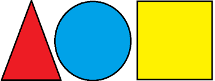

Карта посилань з геометричними фігурами
На зображенні нижче розміщено три гарячі області — кожна веде на інший сайт:

Пояснення:
- 🔺 Натисни на червоний трикутник — відкриється Google
- 🔵 Натисни на синє коло — відкриється Wikipedia
- 🟨 Натисни на жовтий квадрат — відкриється YouTube